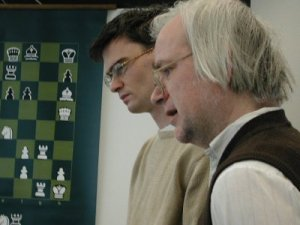

Download area for annotated chess databases
Matches
Chess matches from López to Carlsen.
pgn-file of match games CBase-file Information about the matches
Super tournaments
More than two hundred super tournaments have been annotated.
large zip-file of super tournaments Information and separate downloads
Linares and Morelia
Top grandmasters played in Linares since 1978.
zip-file of CBase-files Information about Linares
Beverwijk and Wijk aan Zee
Hoogovens, Corus and Tata Steel have organised chess tournaments since 1938
zip-file of CBase-files Information about the tournaments
All Biel Chess Festivals
Many grandmaster tournaments have been played in the Swiss city of Biel
pgn of all International Chess Festivals Biel CBase-file of Biel
The Soviet championships
58 Soviet finals occurred from 1921 until 1991
zip-file of Soviet championships Spectacular tournaments by Spassky
Dutch champions
Dutch championships and forerunning events (from 1851) have been investigated.
pgn-file of Dutch tournaments Information about the Dutch tournaments
German chess congresses
German chess congresses and championships (1861-1983) are described.
pgn-file of German tournaments Information about the German events
Hastings chess congresses
International chess tournaments are organised in Hastings since 1895.
pgn-file of Hastings tournaments Information about Hastings

Loek van Wely and Jan van Reek analyse the
third game Rebel-Van Wely (© Eric van Reem)
|
|
Go to home page |